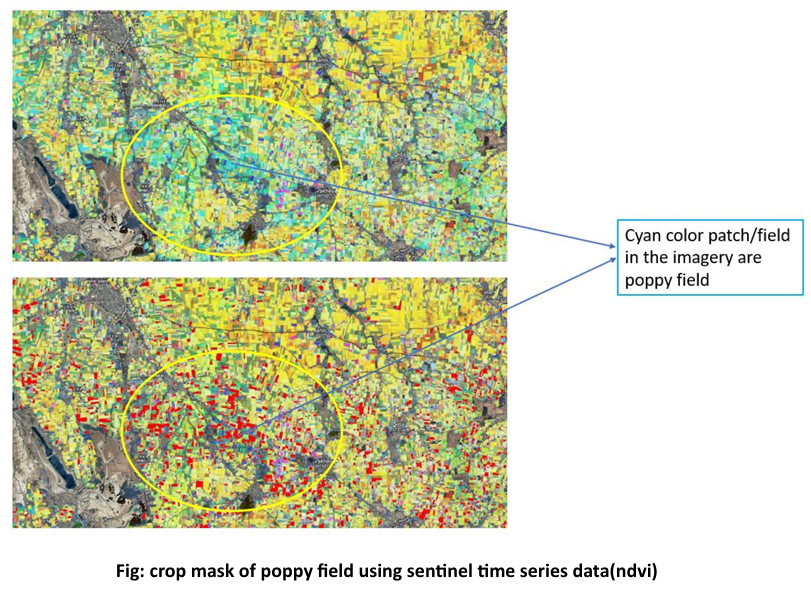
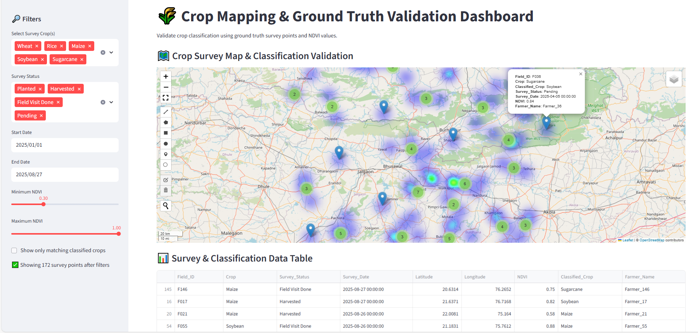

<section id="projects">
  <h2>Projects</h2>

  <!-- Filter Buttons -->
  <div class="project-filters">
    <button class="filter-btn active" data-filter="all">All</button>
    <button class="filter-btn" data-filter="rs-gis">Remote Sensing & GIS</button>
    <button class="filter-btn" data-filter="webgis">WebGIS & Dashboards</button>
  </div>

  <!-- Project Grid -->
  <div class="project-grid">

    <!-- RS/GIS Projects -->
    <div class="project-card rs-gis"
         data-title="Poppy Crop Monitoring"
         data-img="assets/poppy-dashboard.png"
         data-desc="Multi-temporal NDVI & EVI analysis for Neemuch & Mandsaur using Google Earth Engine & Python."
         data-tags="NDVI, Google Earth Engine, Python"
         data-live="https://example.com/poppy"
         data-source="https://github.com/atulb/poppy-dashboard">
      
      <h3>Poppy Crop Monitoring</h3>
      <div class="tags">
        <span>🌾 NDVI</span><span>Google Earth Engine</span><span>Python</span>
      </div>
    </div>

    <div class="project-card rs-gis"
         data-title="Landuse Classification"
         data-img="assets/landuse-classification.png"
         data-desc="Supervised classification of Sentinel-2 imagery using Random Forest in GEE."
         data-tags="Sentinel-2, Random Forest, GEE"
         data-live="https://example.com/landuse"
         data-source="https://github.com/atulb/landuse-classification">
      
      <h3>Landuse Classification</h3>
      <div class="tags">
        <span>🛰️ Sentinel-2</span><span>Random Forest</span><span>GEE</span>
      </div>
    </div>

    <div class="project-card rs-gis"
         data-title="NDVI Analysis"
         data-img="assets/ndvi-analysis.png"
         data-desc="Multi-temporal NDVI feature stacking for crop health monitoring."
         data-tags="NDVI, Time-Series, Python"
         data-live="https://example.com/ndvi"
         data-source="https://github.com/atulb/ndvi-analysis">
      
      <h3>NDVI Analysis</h3>
      <div class="tags">
        <span>🌱 Vegetation Index</span><span>Time-Series</span><span>Python</span>
      </div>
    </div>

    <!-- WebGIS Projects -->
    <div class="project-card webgis"
         data-title="Earthquake Dashboard"
         data-img="assets/earthquake-dashboard.png"
         data-desc="Interactive dashboard with magnitude, depth & time-series analysis using Plotly Dash."
         data-tags="Plotly Dash, Python, Interactive Charts"
         data-live="https://example.com/earthquake"
         data-source="https://github.com/atulb/earthquake-dashboard">
      
      <h3>Earthquake Dashboard</h3>
      <div class="tags">
        <span>🌍 Plotly Dash</span><span>Python</span><span>Interactive Charts</span>
      </div>
    </div>

    <div class="project-card webgis"
         data-title="Survey Dashboard"
         data-img="assets/survey-dashboard.png"
         data-desc="Dashboard for crop survey and ground truth validation with Python Dash."
         data-tags="Survey Data, Python Dash, Crop Mapping"
         data-live="https://example.com/survey"
         data-source="https://github.com/atulb/survey-dashboard">
      
      <h3>Survey Dashboard</h3>
      <div class="tags">
        <span>📊 Survey Data</span><span>Python Dash</span><span>Crop Mapping</span>
      </div>
    </div>

    <div class="project-card webgis"
         data-title="Environmental Dashboard"
         data-img="assets/environmental-dashboard.png"
         data-desc="WebGIS dashboard showing water, soil, and climate indicators using Leaflet & GeoServer."
         data-tags="Leaflet, GeoServer, WebGIS"
         data-live="https://example.com/environment"
         data-source="https://github.com/atulb/environmental-dashboard">
      
      <h3>Environmental Dashboard</h3>
      <div class="tags">
        <span>🌍 Leaflet</span><span>GeoServer</span><span>WebGIS</span>
      </div>
    </div>

  </div>
</section>

<!-- Project Modal -->
<div id="project-modal" class="modal">
  <div class="modal-content">
    <span class="close">&times;</span>
    <h2 id="modal-title"></h2>
    
    <p id="modal-desc"></p>
    <div id="modal-tags" class="tags"></div>
    <div class="modal-links">
      <a id="modal-live" href="#" target="_blank">🔗 Live</a>
      <a id="modal-source" href="#" target="_blank">💻 Source</a>
    </div>
  </div>
</div>
